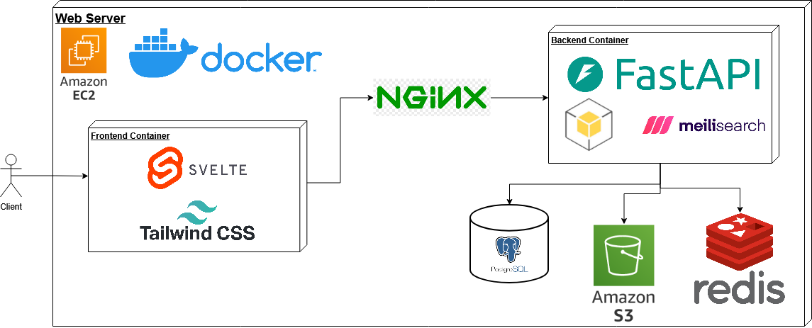

Solution
Our solution aims to make NASA's planetary data in AWS S3 searchable, visual, and secure by enabling fast exploration with intuitive search, filters, and dashboards; delivering instant results with previews and metadata.
Our application will include full-text and metadata search across files, a user-friendly dashboard with visualization tools, a tagging and organization system built for collaboration, and automated checks for risky security configurations.
With ArtemiS3, instead of manually browsing through thousands of files a user could simply search "Mars Imagery 2020" and instantly get results with previews, metadata, and filtering options. Researchers could now spend more time actually using the data rather than searching for it.
Technologies
-
Meilisearch — Search Engine
Meilisearch is a lightweight, open-source search engine designed for fast full-text search, typo tolerance, filtering, and relevance tuning.
It offers a generous free tier, extremely easy integration, strong Python support, and simpler setup than Elasticsearch while still meeting all functional search requirements.
-
Svelte — Frontend Framework
Svelte is a reactive JavaScript framework that compiles components into optimized vanilla JavaScript, removing the need for a virtual DOM.
Svelte provides faster performance on small–medium apps, has an easier learning curve than React, and allows smooth UI updates for fast-changing search results.
-
TailwindCSS — Styling Framework
TailwindCSS is a utility-first CSS framework that uses atomic classes to rapidly build consistent, responsive UI components.
It enables rapid prototyping, efficient styling, strong consistency, and avoids the bulkiness of Bootstrap or the manual work of SCSS.
-
FastAPI — Backend Framework
FastAPI is a modern Python framework offering asynchronous support, automatic documentation, and Pydantic-based validation.
It excels at high-concurrency, I/O-heavy tasks, integrates cleanly with AWS and Python tools, and reduces development overhead compared to Flask.
-
Boto3 — AWS S3 SDK
Boto3 is the official AWS SDK for Python, providing high-level tools for interacting with AWS S3 and related services.
It offers seamless Python integration, robust pagination and retry handling, strong AWS support, and avoids cross-language runtime complexity.
-
AWS EC2 - Web Server Hosting
AWS Elastic Compute Cloud (EC2) is a service which provides fast and affordable virtual server instances hosted on the cloud which can be used for various purposes such as hosting web applications.
EC2 Instances are highly scalable and integrate well with the rest of AWS, support strong and reliable infrastructure, and are simple to set up and monitor.
-
Docker - Web-App Containerization
Docker is a platform for creating, deploying, and running applications in lightweight, portable containers.
Using docker to containerize the Web Application ensures consistent environments from development to production and makes service architecture easier to manage.
-
NGINX - Reverse Proxy
NGINX is a high-performance web server and reverse proxy, also commonly used for load balancing.
It is extremely fast and resource efficient and includes simple configuration for reverse proxy and SSL termination
-
Redis - Hot Path Caching
Redis is an in-memory key-value data store often used as a cache or message broker.
Redis is extremely low latency which makes it ideal for caching, plus it supports advanced structures and is much faster than traditional databases for most use cases.
-
PostgreSQL — Production Database
PostgreSQL is an industry-leading open-source relational database known for ACID compliance, scalability, and strong SQL capabilities.
It provides reliable concurrency, consistent data handling, cloud-ready deployment, and better structure than MongoDB for user-related data.
-
SQLite — Development Database
SQLite is a lightweight, file-based SQL database bundled with Python, ideal for local development.
It requires zero setup, integrates cleanly with FastAPI, and allows a seamless transition to PostgreSQL for production.
Architecture Diagram
Schedule
- November 2025: Requirements acquisition and Feasibility.
- December 2025: Configure Environment and Alpha Demo.
- January 2026: Core backend (search engine) development.
- February 2026: Frontend User Interface development.
- March 2026: Reliability, Monitoring, and Automated Testing.
- March 2026: Final Integrations and Optional Features.
- April 2026: Finalize project and deliver to client.
We are currently between steps 2 and 3 of our schedule. We completed our requirements acquisition and tech feasibility analysis in November, after which we presented our progress at the NAU Engineering Fest. The requirements and tech feasibility documents which we produced in this step as well as our design review presentation from the Engineering Fest can be downloaded from the Demo page. Next we moved on to our environment configuration and alpha demo, both of which established the foundations upon which we will continue development. A brief demo video which demonstrates basic functionality as well as an archive of the code base as it was during the demo can also be found on the Demo page.